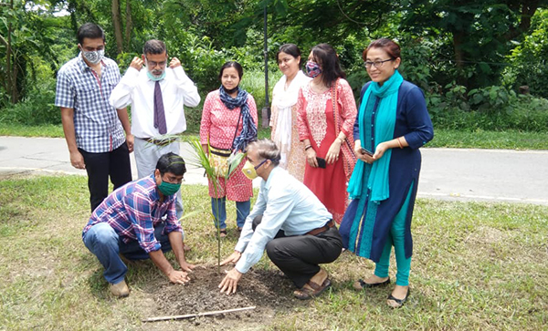
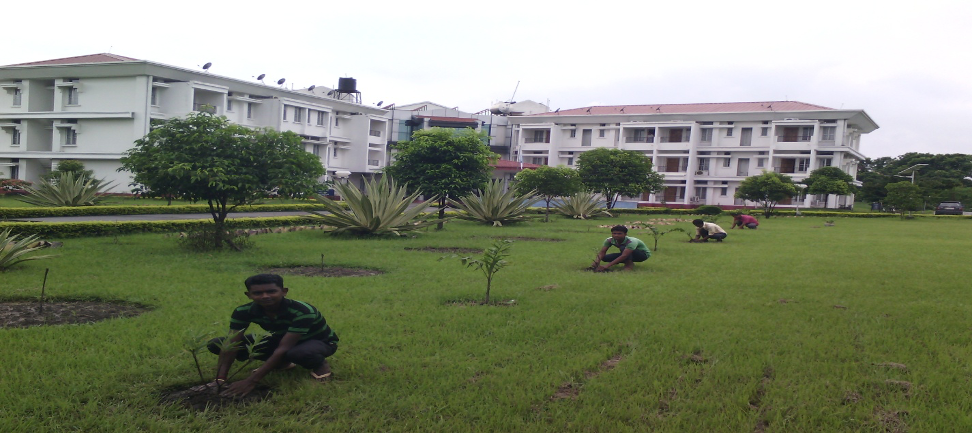
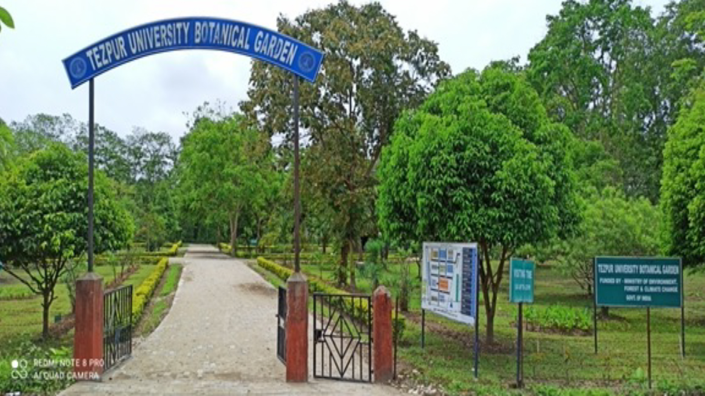

Welcome To Horticulture Section
The horticultural activities for landscaping and beautification of Tezpur University, Napaam was started as and when a Landscaping Committee was constituted on 1995. Realizing the needs for accelerating the Horticultural activities, University authority appointed an Assistant Horticulturist on 16.7.1997 under the administrative Control of Project Engineer. However, at present, there is a separate section for horticultural activities. The Assistant Horticulturist attached to Horticulture Section is looking after the day-to-day landscaping and maintenance activities under the guidance of a Campus Horticultural Committee with a faculty Coordinator.


